먼저 생각해 보세요.
Wir bleiben in Kontakt. 이 말은 언제 하나요?
in Kontakt bleiben은 '계속 연락하며 지내다'라는 뜻이에요.
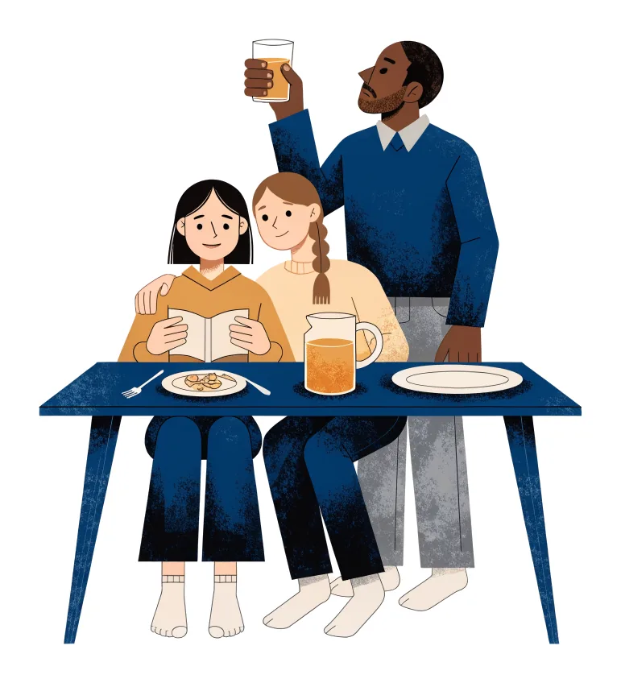
방학을 앞둔 마지막 주예요. 팟캐스트 팀은 저마다 앞으로의 계획을 이야기해요. 금요일 저녁에는 Wagner 가족이 내일 한국으로 돌아가는 Yuna와 마지막 저녁을 먹어요.
눌러서 들어 보세요.
먼저 생각해 보세요.
Wir bleiben in Kontakt. 이 말은 언제 하나요?
in Kontakt bleiben은 '계속 연락하며 지내다'라는 뜻이에요.
Lektion 7의 낱말 다섯 개를 다시 떠올려 보세요.
문법 B1 문법 총정리, Konnektoren im Text, eigene Fehler korrigieren
이 과를 마치면 앞으로의 계획과 목표를 말하고, 지나온 길을 돌아보고, 고마운 마음을 담아 헤어지는 편지를 쓸 수 있어요.
방학을 앞둔 마지막 주예요. 이번 학년의 마지막 팟캐스트를 녹음해요.
들으면서 찾아보세요. Lukas는 10학년을 마치고 무엇을 하고 싶어 하나요?
금요일 저녁, Wagner 가족의 집이에요. 내일 Yuna가 떠나요. Thomas가 Yuna가 가장 좋아하는 음식을 만들었어요.
들으면서 찾아보세요. Emma는 Yuna에게 무엇을 선물하나요?
두 대화를 듣고 답하세요.
Was möchte Lukas nach der zehnten Klasse machen?
Emma braucht für ihren Traumberuf sehr gute Noten.
Was darf Elif in den Ferien machen?
Was möchte Yuna später in Deutschland studieren?
Wie war Yuna vor zwei Jahren?
Yuna liest ihren Brief beim Abendessen vor.
Emma sagt: Lies ihn bitte nicht jetzt vor.
Emma는 Yuna에게 무엇을 선물하나요?
낱말 34개예요. 낱말이나 예문 앞의 단추를 누르면 소리가 나요. 명사는 der, die, das를 색으로 구분했어요.
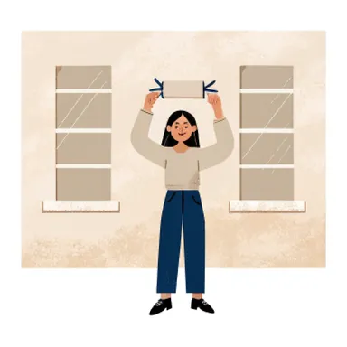
der Abschluss, die Abschlüsse 졸업, 학교를 마침
Nach der zehnten Klasse macht Lukas seinen Abschluss.Lukas는 10학년을 마치고 졸업해요.
die Möglichkeit, die Möglichkeiten 가능성, 할 수 있는 길
Nach der Schule gibt es viele Möglichkeiten.학교를 마치면 갈 수 있는 길이 많아요.
die Chance, die Chancen 기회
Das Praktikum war eine große Chance.그 실습은 큰 기회였어요.
nutzen, hat genutzt 살려 쓰다, 이용하다
Elif nutzt die Ferien zum Schreiben.Elif는 방학을 글 쓰는 데 써요.
hoffen, hat gehofft 바라다
Ich hoffe, dass wir uns bald wiedersehen.우리가 곧 다시 만나기를 바라요.
gelingen, ist gelungen 잘되다, 뜻대로 되다
Der Kuchen ist mir gut gelungen.케이크가 잘 만들어졌어요.
klappen, hat geklappt (일이) 잘되다
Mit dem Praktikum hat alles geklappt.실습은 모든 일이 잘됐어요.
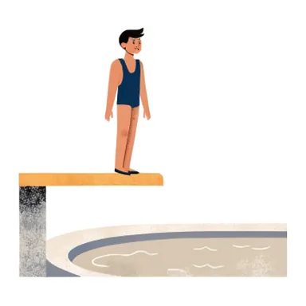
der Mut 용기
Für ein Jahr im Ausland braucht man Mut.외국에서 한 해를 지내려면 용기가 필요해요.
sich trauen, hat sich getraut 용기를 내어 하다
Ich traue mich nicht, vor der Klasse zu singen.나는 반 친구들 앞에서 노래할 용기가 없어요.
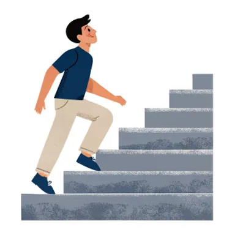
der Schritt, die Schritte 걸음, 단계
Das Praktikum ist der erste Schritt in den Beruf.실습은 직업으로 가는 첫걸음이에요.
das Stipendium, die Stipendien 장학금
Yuna möchte ein Stipendium bekommen.Yuna는 장학금을 받고 싶어 해요.
der Rückblick, die Rückblicke 돌아보기
In der letzten Stunde machen wir einen Rückblick.마지막 시간에 우리는 지난 일을 돌아봐요.
die Leistung, die Leistungen 해낸 일, 성과
Das war eine tolle Leistung.그건 대단한 성과였어요.
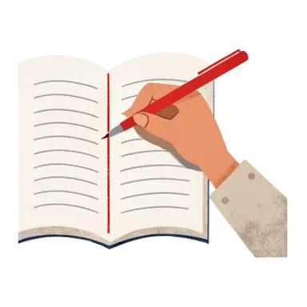
korrigieren, hat korrigiert 고치다, 바로잡다
Ich korrigiere meine Fehler selbst.나는 틀린 곳을 스스로 고쳐요.
der Überblick 한눈에 보기
Zuerst brauche ich einen Überblick.먼저 전체를 한눈에 봐야 해요.
insgesamt 모두 합쳐서, 전체로 보면
Insgesamt war es ein tolles Jahr.전체로 보면 멋진 한 해였어요.
schließlich 마침내, 결국
Schließlich habe ich es geschafft.마침내 나는 해냈어요.
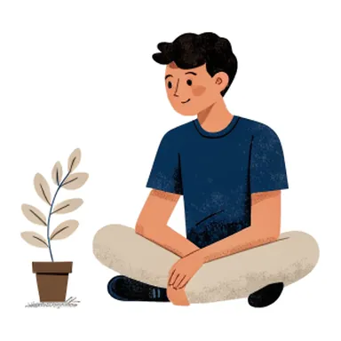
die Geduld 참을성
Sprachen lernen braucht Geduld.말을 배우려면 참을성이 필요해요.
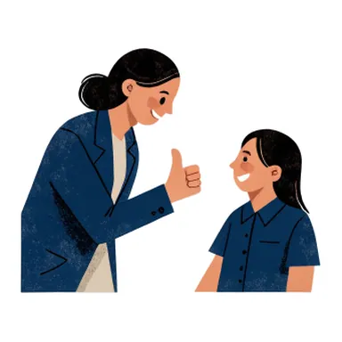
loben, hat gelobt 칭찬하다
Frau Schneider lobt die Klasse.Schneider 선생님이 반 학생들을 칭찬해요.
der Zweifel, die Zweifel 의심, 망설임
Am Anfang hatte ich viele Zweifel.처음에는 망설임이 많았어요.
unsicher 자신 없는, 불안한
Am ersten Tag war ich sehr unsicher.첫날 나는 정말 자신이 없었어요.
selbstbewusst 자신감 있는
Yuna ist selbstbewusst geworden.Yuna는 자신감이 생겼어요.
weitermachen, hat weitergemacht 계속하다
Ich mache weiter, auch wenn es schwer ist.힘들어도 나는 계속해요.
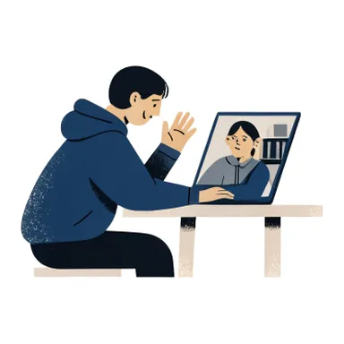
der Kontakt, die Kontakte 연락, 교류
Wir bleiben in Kontakt.우리는 계속 연락해요.
das Wiedersehen 다시 만남
Ich freue mich auf das Wiedersehen.다시 만날 날이 기다려져요.
die Umarmung, die Umarmungen 포옹
Zum Abschied gibt es eine lange Umarmung.헤어질 때 오래 껴안아요.
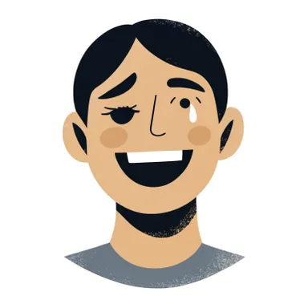
die Träne, die Tränen 눈물
Emma hat Tränen in den Augen.Emma의 눈에 눈물이 고였어요.
der Abflug, die Abflüge (비행기의) 출발
Der Abflug ist um elf Uhr.비행기는 열한 시에 떠나요.
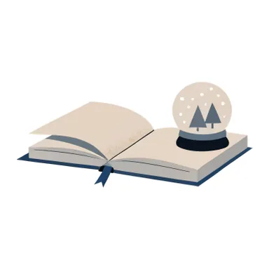
das Andenken, die Andenken 기념품, 추억이 담긴 물건
Das Fotoalbum ist ein schönes Andenken.그 사진첩은 좋은 추억거리예요.
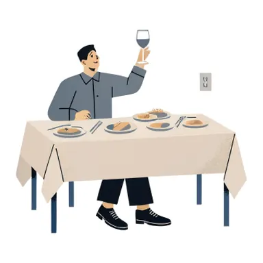
die Rede, die Reden 연설, 여럿 앞에서 하는 말
Thomas hält eine kleine Rede.Thomas가 짧게 한마디 해요.
dankbar 고마워하는
Ich bin euch sehr dankbar.나는 너희에게 정말 고마워.
sich bedanken, hat sich bedankt 고맙다고 말하다
Yuna bedankt sich bei ihrer Gastfamilie.Yuna는 호스트 가족에게 고맙다고 해요.
unvergesslich 잊을 수 없는
Es war ein unvergessliches Jahr.잊을 수 없는 한 해였어요.
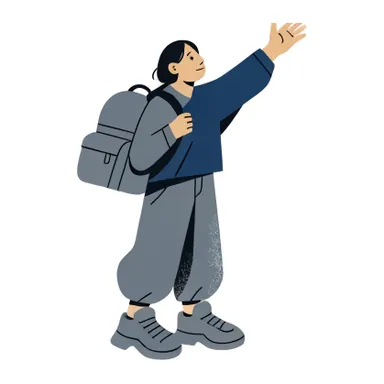
winken, hat gewinkt 손을 흔들다
Alle winken zum Abschied.모두 헤어지며 손을 흔들어요.
이 과의 낱말로 여덟 문제를 풀어요.
예문을 보고 답해 보세요.
어느 이음말 뒤에서 동사가 문장 맨 끝으로 가나요?
규칙
문장을 잇는 말은 세 갈래예요. und, aber, oder, denn, sondern 뒤에서는 낱말 차례가 바뀌지 않아요. deshalb, trotzdem, außerdem, danach 바로 뒤에는 동사가 와요. weil, obwohl, dass, wenn, als, damit, nachdem이 이끄는 문장에서는 동사가 맨 끝으로 가요.
| 이음말 | 보기 |
|---|---|
| und, aber, denn | Ich bin müde, aber ich lerne weiter. |
| deshalb, trotzdem | Ich bin müde. Trotzdem lerne ich weiter. |
| weil, obwohl, dass | Ich lerne weiter, obwohl ich müde bin. |
주의 긴 글에서는 이음말을 골고루 써요. 같은 이음말만 되풀이하면 글이 단조로워져요.
예문을 보고 답해 보세요.
Ich hatte drei Monate Deutsch gelernt, bevor ich nach Köln kam. 먼저 일어난 일은 무엇인가요?
규칙
말로 지난 일을 전할 때는 Perfekt를 써요. 글로 이야기할 때와 sein, haben, 조동사는 Präteritum을 써요. 그보다 더 먼저 일어난 일은 Plusquamperfekt로, 앞으로의 일은 Futur I이나 현재형으로 말해요.
| 꼴 | 보기 |
|---|---|
| Perfekt | Ich habe viel gelernt. |
| Präteritum | Ich lernte viel. Ich war müde. |
| Plusquamperfekt | Ich hatte schon viel gelernt. |
| Futur I | Ich werde viel lernen. |
주의 사실이 아닌 일과 바람은 Konjunktiv II로 말해요. Wenn ich mehr Zeit hätte, würde ich noch bleiben.
예문을 보고 답해 보세요.
Ich lerne Deutsch, weil ich möchte in Deutschland studieren. 이 문장은 어디를 고쳐야 하나요?
규칙
글을 다 쓰면 네 가지를 차례로 살펴요. 첫째, 동사가 제자리에 있는지 봐요. 둘째, 동사의 끝이 주어와 맞는지 봐요. 셋째, 전치사 뒤의 관사와 명사의 끝이 맞는지 봐요. 넷째, 명사를 큰 글자로 썼는지, 쉼표를 찍었는지 봐요.
| 살필 것 | 바른 보기 |
|---|---|
| 동사의 자리 | …, weil ich hier studieren möchte. |
| 동사의 끝 | Meine Freunde kommen mit. |
| 전치사와 관사 | mit dem Bus, für den Test |
| 큰 글자와 쉼표 | Ich hoffe, dass der Brief ankommt. |
주의 한 번에 한 가지만 보면서 글을 네 번 읽어요. 그러면 틀린 곳을 훨씬 잘 찾을 수 있어요.
토요일 아침, 공항이에요. 듣고 답하세요.
Am Flughafen
Lukas Yuna! Wir wollten dich überraschen.
Yuna Lukas, Elif! Ihr seid zum Flughafen gekommen? Um acht Uhr morgens?
Elif Natürlich. Hier ist ein Andenken von der ganzen Klasse: ein T-Shirt mit allen Namen.
Yuna Danke! Das trage ich im Flugzeug.
Emma Schreib uns, wenn du gelandet bist.
Yuna Versprochen. Macht es gut! Und vergesst mich nicht.
Wer überrascht Yuna am Flughafen?
Was bekommt Yuna von der Klasse?
Yuna will das T-Shirt im Flugzeug tragen.
Emma는 Yuna에게 무엇을 부탁하나요?
듣고 알맞은 것을 고르세요.
Frau Schneider는 이번 학년이 어땠다고 하나요?
Insgesamt war es ein tolles Schuljahr. Ich bin stolz auf euch.
무엇이 잘됐나요?
Es hat geklappt! Mein Zeugnis ist viel besser als letztes Jahr.
Emma는 어떻게 하나요?
Obwohl ich Zweifel habe, mache ich weiter.
몇 시에 집에서 출발하나요?
Der Abflug ist um elf, deshalb fahren wir um sieben los.
Yuna가 호스트 가족에게 쓴 편지예요. 읽고 답하세요.
Yunas Brief
Liebe Sabine, lieber Thomas, liebe Emma,
vor zwei Jahren kam ich nach Köln und konnte fast kein Deutsch. Trotzdem war ich für euch sofort wie eine Tochter.
Sabine, du hast mir jeden Abend zugehört, obwohl du nach der Arbeit müde warst. Thomas, von dir habe ich gelernt, dass Ehrlichkeit auch Höflichkeit ist.
Emma, du bist die Schwester, die ich nie hatte. Ohne dich hätte ich das erste Jahr nicht geschafft.
Ich bin euch sehr dankbar. Es waren zwei unvergessliche Jahre.
Ich hoffe, dass wir uns nächsten Sommer in Seoul wiedersehen. Eure Yuna
Wie gut konnte Yuna vor zwei Jahren Deutsch?
Was hat Sabine jeden Abend gemacht?
Yuna hat von Thomas etwas über Ehrlichkeit gelernt.
Wer ist für Yuna wie eine Schwester?
Yuna는 무엇을 바라나요?
네 친구의 계획을 모은 표예요. 보고 답하세요.
Unsere Pläne
| Name | Plan | Wann? |
|---|---|---|
| Lukas | Ausbildung | nach der 10. Klasse |
| Emma | Abitur | in vier Jahren |
| Elif | Artikel schreiben | in den Ferien |
| Yuna | Studium | nach der Schule |
Wer möchte eine Ausbildung machen?
Elif schreibt in den Ferien einen Artikel.
Wann macht Emma das Abitur?
문장을 잇는 말이에요. 알맞은 말을 고르세요.
Ich lerne Deutsch, ich in Deutschland studieren möchte.
독일에서 대학에 다니고 싶어서 독일어를 배워요.
Ich war müde. habe ich weitergemacht.
피곤했어요. 그래도 계속했어요.
Emma Zweifel hat, versucht sie es.
Emma는 자신이 없지만 해 봐요.
Die Noten müssen gut sein. lernt Emma mehr.
성적이 좋아야 해요. 그래서 Emma는 더 많이 공부해요.
Der Abschied ist schwer, wir bleiben in Kontakt.
헤어지는 건 힘들지만 우리는 계속 연락해요.
Ich hoffe, wir uns bald wiedersehen.
우리가 곧 다시 만나기를 바라요.
동사의 꼴이에요. 알맞은 말을 고르세요.
Vor zwei Jahren ich nach Köln gekommen.
2년 전에 나는 쾰른에 왔어요.
Damals ich fast kein Deutsch.
그때 나는 독일어를 거의 못했어요.
Bevor ich nach Köln kam, ich drei Monate Deutsch gelernt.
쾰른에 오기 전에 나는 석 달 동안 독일어를 배웠어요.
Nächsten Sommer wir dich besuchen.
내년 여름에 우리가 너를 보러 갈 거야.
Wenn ich mehr Zeit hätte, ich noch bleiben.
시간이 더 있다면 더 머물 텐데.
Das Fotoalbum von Emma gemacht. Es ist schon fertig.
사진첩은 Emma가 만들었어요. 벌써 다 됐어요.
글을 고쳐요. 알맞은 말을 고르세요.
Meine Freunde morgen zum Flughafen.
내 친구들이 내일 공항에 와요.
Wir fahren mit Auto zum Flughafen.
우리는 차를 타고 공항에 가요.
Danke für schöne Zeit.
좋은 시간을 보내게 해 줘서 고마워요.
Ich hoffe, dass der Brief pünktlich .
편지가 제때 닿기를 바라요.
dass 문장에서는 나누어지는 동사도 붙여서 맨 끝에 써요.
Wegen Abschieds sind alle traurig.
헤어져야 해서 모두 슬퍼요.
Gestern ich meinen Koffer gepackt.
어제 나는 가방을 쌌어요.
알맞은 낱말을 고르세요.
Wir bleiben in . Ich schreibe dir jede Woche.
우리 계속 연락하자. 내가 주마다 쓸게.
Das Praktikum war eine große . Ich habe viel gelernt.
그 실습은 큰 기회였어요. 많이 배웠어요.
Am Anfang war ich . Ich habe kaum gesprochen.
처음에 나는 자신이 없었어요. 말을 거의 안 했어요.
Sprachen lernen braucht . Es geht nicht in einer Woche.
말을 배우려면 참을성이 필요해요. 한 주 만에 되지 않아요.
Ich bin euch sehr . Ihr habt mir so viel geholfen.
너희에게 정말 고마워. 나를 많이 도와줬어.
Es hat ! Ich habe die Prüfung bestanden.
잘됐어요! 시험에 붙었어요.
낱말을 순서대로 눌러 문장을 만드세요.
우리가 계속 연락하기를 바라.
그래도 나는 계속했어.
Emma는 자신이 없지만 해 봐.
내년 여름에 우리가 너를 보러 갈 거야.
낱말과 뜻을 짝지으세요.
듣고 그대로 써 보세요.
Wir bleiben in Kontakt. 우리 계속 연락하자.
Ich hoffe, dass wir uns bald wiedersehen. 우리가 곧 다시 만나기를 바라.
Es hat geklappt. 잘됐어.
Nach der Schule möchte ich studieren. 학교를 마치면 대학에 가고 싶어.
Ich habe vor, eine Ausbildung zu machen. 나는 직업 교육을 받을 계획이야.
Mein Ziel ist das Abitur. 내 목표는 아비투어야.
Ich hoffe, dass es klappt. 잘되면 좋겠어.
Am Anfang war ich unsicher. 처음에는 자신이 없었어.
Insgesamt war es ein tolles Jahr. 전체로 보면 멋진 한 해였어.
Ich habe viel gelernt. 나는 많이 배웠어.
Darauf bin ich stolz. 나는 그게 자랑스러워.
Ich bin dir sehr dankbar. 너에게 정말 고마워.
Danke für alles. 모든 게 고마워.
Ohne dich hätte ich das nicht geschafft. 네가 없었다면 해내지 못했을 거야.
Das werde ich nie vergessen. 그건 절대 잊지 않을 거야.
Wir bleiben in Kontakt. 우리 계속 연락하자.
Mach's gut! 잘 지내!
Pass auf dich auf! 몸조심해!
Bis bald! 곧 또 봐!
대화 A에서 역할을 하나 고르세요. 상대의 말은 음성으로 나오고, 내 차례에는 직접 말해요.
독일어를 배워 온 길과 앞으로의 계획을 적으세요. 완성된 문장을 소리 내어 읽어 보세요.
Ich habe vor zwei Jahren mit Deutsch angefangen.
Am Anfang war die Aussprache schwer für mich.
Jetzt kann ich einen langen Text auf Deutsch schreiben.
Mein nächstes Ziel ist, in Deutschland zu studieren.
Ein Brief zum Abschied
헤어지는 사람에게 고마움을 전하는 편지를 써요. 선생님, 친구, 가족 가운데 한 사람을 골라요. 여덟 문장쯤 써요.
Liebe Frau Schneider, vor zwei Jahren kam ich in Ihre Klasse und konnte fast kein Deutsch. Sie haben trotzdem immer Geduld mit mir gehabt. Obwohl ich viele Fehler gemacht habe, haben Sie mich oft gelobt. Deshalb habe ich mich getraut, im Unterricht zu sprechen. Von Ihnen habe ich gelernt, dass man aus Fehlern lernt. Dafür bin ich Ihnen sehr dankbar. Ich hoffe, dass wir in Kontakt bleiben. Herzliche Grüße, Ihre Yuna
다 쓴 뒤에 확인해 보세요.
Ich kann über meine Pläne und Ziele sprechen.내 계획과 목표를 말할 수 있어요.
Ich kann von meinem Weg erzählen und sagen, was ich gelernt habe.내가 걸어온 길을 이야기하고 무엇을 배웠는지 말할 수 있어요.
Ich kann meinen eigenen Text prüfen und korrigieren.내 글을 스스로 살펴보고 고칠 수 있어요.